多线程编程
5 Monitor 概念
Java 对象头 = Java对象 - Java对象体
Java HotSpot虚拟机中，每个对象都有对象头，保存哈希码、分代年龄等，当加锁时，这些信息就根据情况被替换为标记位、线程锁记录指针、重量级锁指针、线程ID等内容
Klass Word指向这个对象的Class类
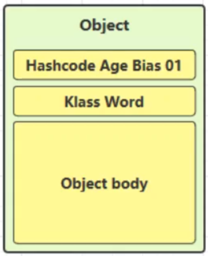
以 32 位虚拟机为例
普通对象
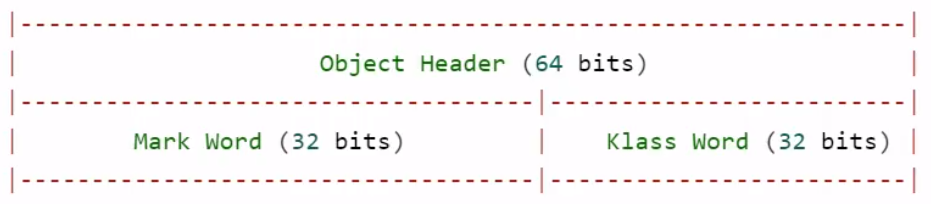
数组对象
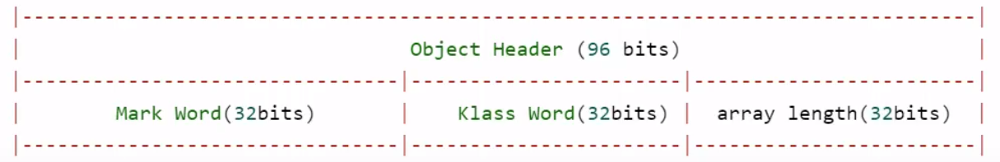
其中 Mark Word 结构为
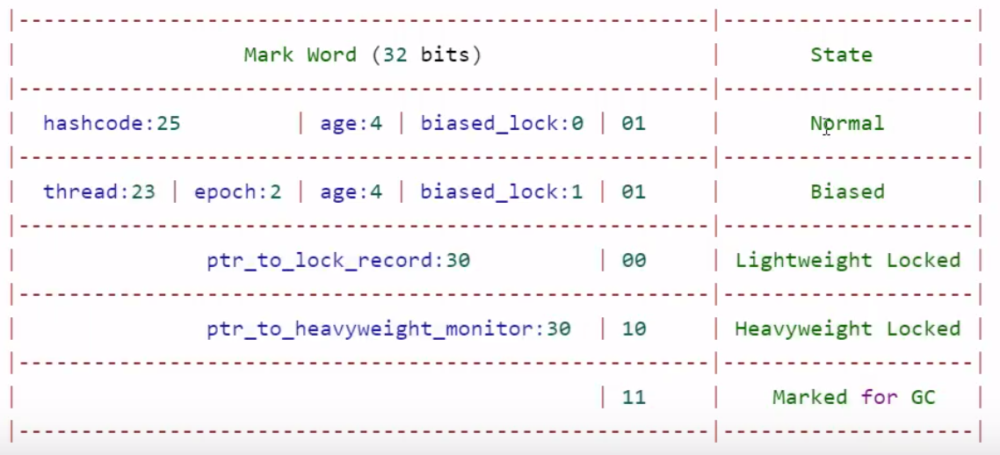
锁关系引入
- 老王 - JVM
- 小南 - 线程
- 小女 - 线程
- 房间 - 对象
- 房间门上 - 防盗锁 - Monitor
- 房间门上 - 小南书包 - 轻量级锁
- 房间门上 - 刻上小南大名 - 偏向锁
- 批量重刻名 - 一个类的偏向锁撤销到达 20 阈值
- 不能刻名字 - 批量撤销该类对象的偏向锁，设置该类不可偏向
小南要使用房间保证计算不被其它人干扰（原子性），最初，他用的是防盗锁，当上下文切换时，锁住门。这样， 即使他离开了，别人也进不了门，他的工作就是安全的。
但是，很多情况下没人跟他来竞争房间的使用权。小女是要用房间，但使用的时间上是错开的，小南白天用，小女晚上用。每次上锁太麻烦了，有没有更简单的办法呢？
小南和小女商量了一下，约定不锁门了，而是谁用房间，谁把自己的书包挂在门口，但他们的书包样式都一样，因此每次进门前得翻翻书包，看课本是谁的，如果是自己的，那么就可以进门，这样省的上锁解锁了。万一书包不是自己的，那么就在门外等，并通知对方下次用锁门的方式。
后来，小女回老家了，很长一段时间都不会用这个房间。小南每次还是挂书包，翻书包，虽然比锁门省事了，但仍然觉得麻烦。
于是，小南干脆在门上刻上了自己的名字：【小南专属房间，其它人勿用】，下次来用房间时，只要名字还在，那么说明没人打扰，还是可以安全地使用房间。如果这期间有其它人要用这个房间，那么由使用者将小南刻的名字擦掉，升级为挂书包的方式。
同学们都放假回老家了，小南就膨胀了，在 20个房间刻上了自己的名字，想进哪个进哪个。后来他自己放假回老家了，这时小女回来了（她也要用这些房间），结果就是得一个个地擦掉小南刻的名字，升级为挂书包的方式。老王觉得这成本有点高，提出了一种批量重刻名的方法，他让小女不用挂书包了，可以直接在门上刻上自己的名字
后来，刻名的现象越来越频繁，老王受不了了：算了，这些房间都不能刻名了，只能挂书包
Monitor(锁)
Monitor被翻译为监视器或管程，由操作系统提供，成本比较高
每个Java对象都可以关联一个 Monitor对象，如果使用synchronized给对象上锁(重量级)之后，该对象头的Mark Word中就被设置指向Monitor对象的指针
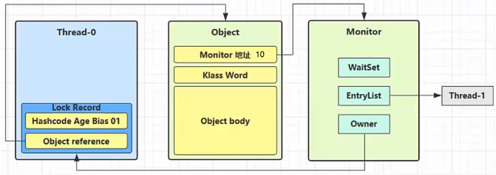
Monitor结构如下
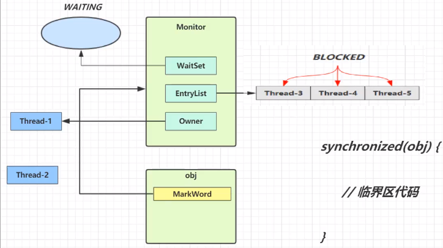
- 刚开始Monitor中Owner为null
当
Thread-2执行synchronized(obj)就会将Monitor的所有者Owner置为Thread-2，Monitor中只能有一个Owner=Thread-2上锁的过程中，如果Thread-3,Thread-4,Thread-5也来执行synchronized(obj), 就会进入EntryList中BLOCKEDThread-2执行完同步代码块的内容，然后唤醒EntryList中等待的线程来竞争锁，竞争的时候是非公平的- 图中
WaitSet中的Thread-? Thread-?是之前获得过锁，但条件不满足进入WAITING状态的线程，后面讲wait-notify时会分析
注意:
- synchronized 必须是进入同一个对象的monitor才有上述的效果
- 不加synchronized的对象不会关联监视器，不遵从以上规则
原理之synchronized
1 | static final Object lock = new Object(); |
对应的字节码为javap -c XXX.Class
1 | public static void main(java.lang.String[]); |
方法级别的 synchronized 不会在字节码指令中有所体现
synchronized优化：轻量级锁——前提：线程访问对象时间错开
不再使用Monitor锁，而是使用线程栈帧中的锁记录充当轻量级锁
轻量级锁的使用场景：如果一个对象虽然有多线程要加锁，但加锁的时间是错开的（也就是没有竞争），那么可以使用轻量级锁来优化。
如果有竞争力，轻量级锁会升级为重量级锁
轻量级锁对使用者是透明的，即语法仍然是 synchronized，如果失败，升级为重量级锁
假设有两个方法同步块，利用同一个对象加锁
1
2
3
4
5
6
7
8
9
10
11
12static final Object obj = new Object();
public static void method1() {
synchronized( obj ) {
// 同步块 A
method2();
}
}
public static void method2() {
synchronized( obj ) {
// 同步块 B
}
}
线程的栈帧中创建锁记录（Lock Record）对象【JVM层面】，每个线程的栈帧都会包含一个锁记录的结构，内部可以存储锁定对象的 Mark Word
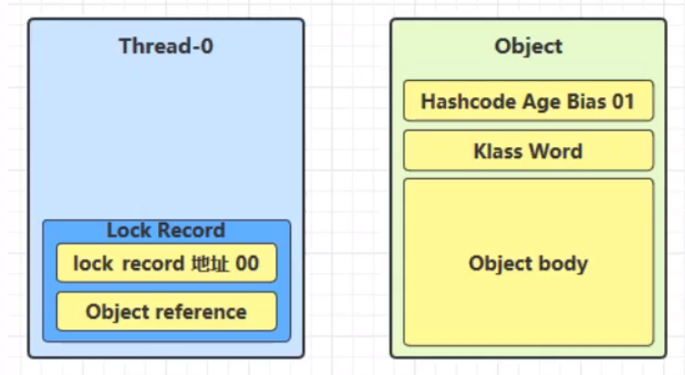
让锁记录中
Object reference指向锁对象，并尝试用 cas 替换 Object 的Mark Word，将Mark Word的值存入锁记录【MarkWord上01表示无锁状态 锁记录中地址为00轻量级锁】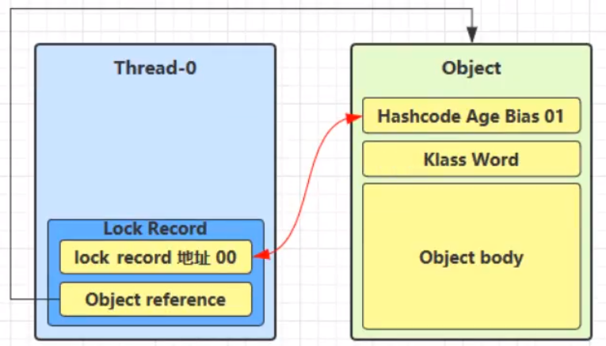
如果
cas替换成功，对象头中存储了 锁记录地址和状态 00 ，表示由该线程给对象加锁，这时图示如下
如果 cas 失败，有两种情况
如果是其它线程已经持有了该 Object 的轻量级锁，对象头的状态码不是01，这时表明有竞争，其他线程已经持有了这个锁对象，进入锁膨胀过程
如果是自己执行了 synchronized 锁重入，那么新的栈帧中再添加一条 Lock Record【Lock Record是栈结构本身也可重入 解锁时将元素弹出】作为重入的计数
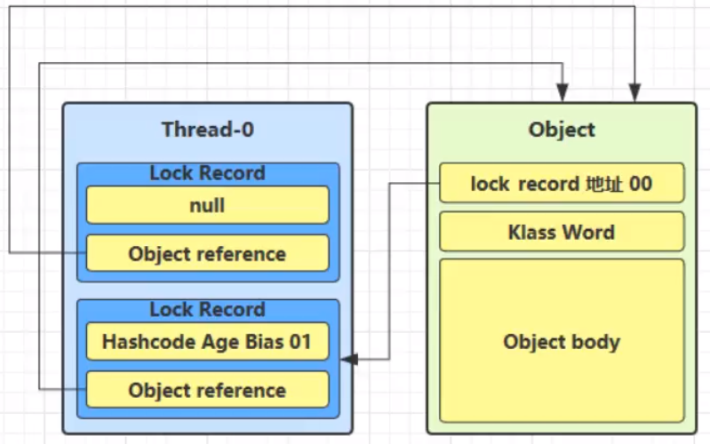
当退出 synchronized 代码块（解锁时）如果有取值为 null 的锁记录，表示有重入，这时重置锁记录，表示重入计数减一
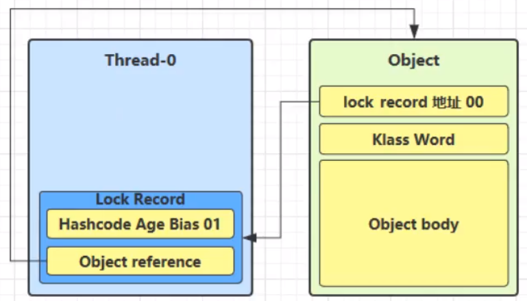
当退出
synchronized代码块（解锁时）锁记录的值不为 null，这时使用 cas 将Mark Word的值恢复给对象头- 成功，则解锁成功
- 失败，说明轻量级锁进行了锁膨胀已经升级为重量级锁，进入重量级锁解锁流程
| 线程1 | 对象Mark Word | 线程2 |
|---|---|---|
| 访问同步块A 把Mark Word复制到线程1的锁记录 |
01 (无锁) | - |
| CAS修改Mark Word为线程1锁记录地址 | 01 (无锁) | - |
| 成功(加锁) | 00 (轻量锁) 线程1锁记录地址 | - |
| 执行同步块A | 00 (轻量锁) 线程1锁记录地址 | - |
| 访问同步块B 把Mark Word复制到线程1的锁记录 |
00(轻量锁) 线程1锁记录地址 | - |
| CAS修改Mark Word为线程1锁记录地址 | 00(轻量锁) 线程1锁记录地址 | - |
| 失败(发现是自己的锁) | 00(轻量锁) 线程1锁记录地址 | - |
| 锁重入 | 00(轻量锁) 线程1锁记录地址 | - |
| 执行同步块B | 00(轻量锁) 线程1锁记录地址 | - |
| 同步块B执行完毕 | 00(轻量锁) 线程1锁记录地址 | - |
| 同步块A执行完毕 | 00(轻量锁) 线程1锁记录地址 | - |
| 成功(解锁) | 01 (无锁) | - |
| - | 01 (无锁) | 访问同步块A 把Mark Word复制到线程2的锁记录 |
| - | 01 (无锁) | CAS修改Mark Word为线程2锁记录地址 |
| - | 00(轻量锁) 线程2锁记录地址 | 成功（加锁） |
| … | … | … |
锁膨胀
如果在尝试加轻量级锁的过程中，CAS 操作无法成功，这时一种情况就是有其它线程为此对象加上了轻量级锁（有竞争），这时需要进行锁膨胀，将轻量级锁变为重量级锁。
Thread-0 已经对该对象加了轻量级锁，当 Thread-1 进行轻量级加锁时
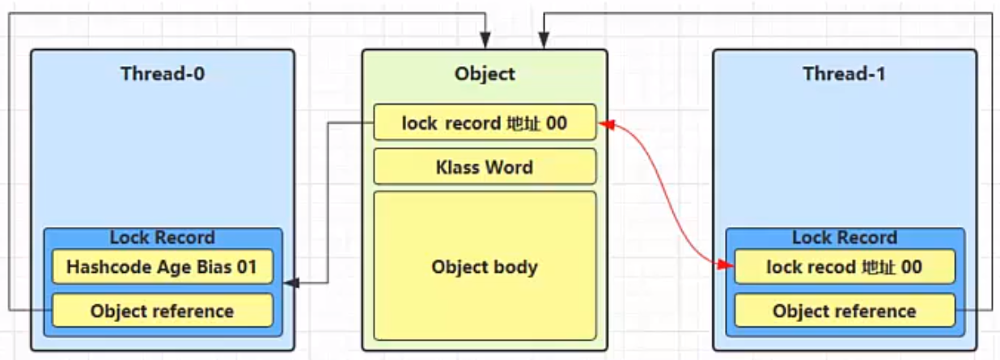
这时
Thread-1加轻量级锁失败，状态码已经不是01无锁状态，进入锁膨胀流程即为 Object 对象申请 Monitor 锁，
Thread-1需要进入Monitor锁进行阻塞等待，让 Object 指向重量级锁地址，状态码为10然后自己进入 Monitor 的 EntryList中BLOCKED
当 Thread-0 退出同步块解锁时，因为对象头中MarkWord已经改变为重量级锁地址和10，使用 cas 将 Mark Word 的值恢复给对象头，失败。
这时会进入重量级解锁流程，即按照 Monitor 地址找到 Monitor 对象，设置 Owner 为 null，唤醒 EntryList 中 BLOCKED 线程
| 线程1 | 对象Mark | 线程2 |
|---|---|---|
| 访问同步块A 把Mark Word复制到线程1的锁记录 |
01 (无锁) | - |
| CAS修改Mark Word为线程1锁记录地址 | 01 (无锁) | - |
| 成功（加锁） | 00(轻量锁) 线程1锁记录地址 | - |
| 执行同步块 | 00(轻量锁) 线程1锁记录地址 | - |
| 执行同步块 | 00(轻量锁) 线程1锁记录地址 | 访问同步块 把Mark Word复制到线程2 |
| 执行同步块 | 00(轻量锁) 线程1锁记录地址 | CAS修改Mark为线程2锁记录地址 |
| 执行同步块 | 00(轻量锁) 线程1锁记录地址 | 失败(发现别人已经占了锁) |
| 执行同步块 | 00(轻量锁) 线程1锁记录地址 | CAS修改Mark为重量锁 |
| 执行同步块 | 10 (重量锁)重量锁指针 | 阻塞中 |
| 执行完毕 | 10 (重量锁)重量锁指针 | 阻塞中 |
| 失败(解锁) | 10 (重量锁)重量锁指针 | 阻塞中 |
| 释放重量锁，唤起阻塞线程竞争 | 10 (重量锁) | 阻塞中 |
| - | 10 (重量锁) | 竞争重量锁 |
| - | 10 (重量锁) | 成功（加锁） |
| - | … | … |
synchronized优化：自旋优化——前提：重量级锁竞争的时候
重量级锁竞争的时候，还可以使用自旋来进行优化，查询
Owner不为null，避免直接进入EntryList中进行阻塞（发生上下文切换），如果当前线程自旋成功（即这时候持锁线程已经退出了同步块，释放了锁），这时当前线程就可以避免阻塞。自旋重试成功的情况
线程 1 （core 1 上） 对象 Mark 线程 2 （core 2 上） - 10（重量锁） - 访问同步块，获取 monitor 10（重量锁）重量锁指针 - 成功（加锁） 10（重量锁）重量锁指针 - 执行同步块 10（重量锁）重量锁指针 - 执行同步块 10（重量锁）重量锁指针 访问同步块，获取 monitor 执行同步块 10（重量锁）重量锁指针 自旋重试 执行完毕 10（重量锁）重量锁指针 自旋重试 成功（解锁） 01(无锁) 自旋重试 - 10（重量锁）重量锁指针 成功（加锁） - 10（重量锁）重量锁指针 执行同步块 - … … 自旋重试失败的情况
线程 1 （core 1 上） 对象 Mark 线程 2 （core 2 上） - 10（重量锁） - 访问同步块，获取 monitor 10（重量锁）重量锁指针 - 成功（加锁） 10（重量锁）重量锁指针 - 执行同步块 10（重量锁）重量锁指针 - 执行同步块 10（重量锁）重量锁指针 访问同步块，获取 monitor 执行同步块 10（重量锁）重量锁指针 自旋重试 执行同步块 10（重量锁）重量锁指针 自旋重试 执行同步块 10（重量锁）重量锁指针 自旋重试 执行同步块 10（重量锁）重量锁指针 进入EntryList阻塞 … … … 自旋会占用 CPU 时间，单核 CPU 自旋就是浪费，多核 CPU 自旋才能发挥优势。
在 Java 6 之后自旋锁是自适应的，比如对象刚刚的一次自旋操作成功过，那么认为这次自旋成功的可能性会高，就多自旋几次；反之，就少自旋甚至不自旋
总之，比较智能。 Java 7 之后不能控制是否开启自旋功能
synchronized优化：偏向锁——前提：线程访问对象错开
缺点：轻量级锁在没有竞争时（就自己这个线程），每次重入仍然需要执行 CAS 操作【尝试用 cas 替换 Object 的
Mark Word】。Java 6 中引入了偏向锁来做进一步优化：只有第一次使用 CAS 将线程
ID设置到对象的Mark Word头，之后发现这个线程ID是自己的就表示没有竞争，不用重新CAS[每次都生成锁记录，将对象头尝试改为锁记录地址，检测是否会失败]。以后只要不发生竞争，这个对象就归该线程所有- 撤销偏向需要将持锁线程升级为轻量级锁，这个过程中所有线程需要暂停(STW)
- 访问对象的hashCode也会撤销偏向锁
- 如果对象虽然被多个线程访问，但没有竞争，这时偏向了线程T1的对象仍有机会重新偏向T2,重偏向会
重置对象的Thread ID - 撤销偏向和重偏向都是批量进行的，以类为单位
- 如果撤销偏向到达某个阈值,整个类的所有对象都会变为不可偏向的
- 可以主动使用-XX:-UseBiasedLocking禁用偏向锁
例如
1
2
3
4
5
6
7
8
9
10
11
12
13
14
15
16
17
18
19static final Object obj = new Object();
public static void m1() {
synchronized( obj ) {
// 同步块 A
m2();
}
}
public static void m2() {
synchronized( obj ) {
// 同步块 B
m3();
}
}
public static void m3() {
synchronized( obj )
{
// 同步块 C
}
}
将进行三次锁重入——轻量级锁
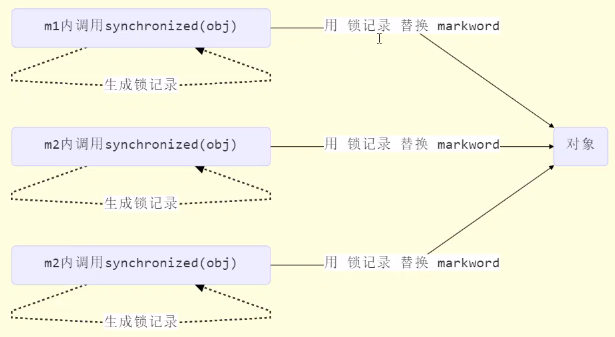
优化为偏向锁
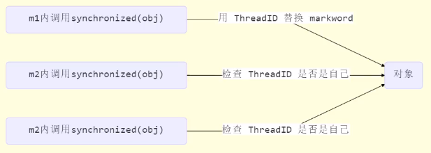
偏向状态
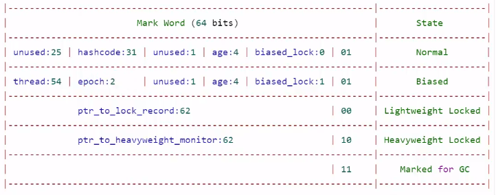
一个对象创建时：
- 如果开启了偏向锁（默认开启），那么对象创建后，对象头中
markword值为0x05即最后 3 位为 101，这时它的thread、epoch、age都为0 - 偏向锁是默认是延迟的，不会在程序启动时立即生效，如果想避免延迟，可以加
VM参数XX:BiasedLockingStartupDelay=0来禁用延迟 - 如果没有开启偏向锁，那么对象创建后，
markword值为0x01即最后 3 位为 001，这时它的hashcode age都为 0，第一次用到hashcode时才会赋值
- 如果开启了偏向锁（默认开启），那么对象创建后，对象头中
加锁过程中打印锁对象头信息
1
2
3
4
5
6
7
8
9
10
11
12
13
14
15
16
17
18
19
20
21
22public static void main(String[] args) throws InterruptedException {
Dog d = new Dog();
// d.hashCode(); 撤销对象可偏向状态，取消偏向锁 有禁用偏向锁的效果
log.debug(ClassLayout.parseInstance(d).toPrintableSimple(true));
synchronized (d) {
log.debug(ClassLayout.parseInstance(d).toPrintableSimple(true));
}
log.debug(ClassLayout.parseInstance(d).toPrintableSimple(true));
}
//加VM参数`XX:BiasedLockingStartupDelay=0`来禁用偏向锁延迟
//没有注释行============================
/*
第一行结果【synchronized 前】：对象生成时结尾直接为101[偏向锁]，而不是001[正常无锁]，前面都是0相同
第二行结果【synchronized 中】：线程ID与Java中getId返回的结果不一致，ID是OS的唯一标识与Java中不是一一对应
第三行结果【synchronized 后】：偏向锁的特性，d对象就给主线程使用，d从属于主线程，MarkWork头中一直存储着主线程ID，除非其他线程使用该对象或其他可能是才会改变 解锁后仍然存储于对象头中
*/
//注释行============================
/*
第一行结果【synchronized 前】：是001[正常无锁] d.hashCode(); 撤销偏向锁 因为偏向锁MarkWord没地方存hashCode 正常无锁前面数字为hashCode 轻量级锁存在于锁记录中 重量级锁存在于monitor中
第二行结果【synchronized 中】：轻量级锁00
第三行结果【synchronized 后】：是001[正常无锁]
*/没有注释行============================
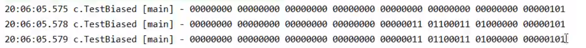
注释行============================
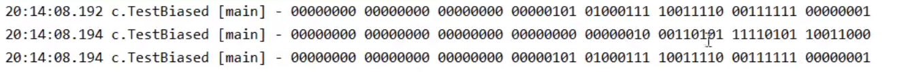
添加
VM参数-XX:-UseBiasedLocking禁用偏向锁后，直接应用轻量级锁- 偏向锁适用冲突很少的情况，只有自己使用对象加锁
- 如果场景为多线程 经常竞争锁对象 应该添加此参数
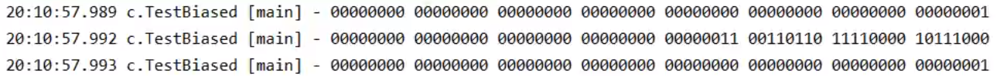
1
2
3
4
5/*
第一行结果【synchronized 前】：正常锁的状态001，不是之前101偏向锁
第二行结果【synchronized 中】：成为轻量级锁00 前面的62位轻量级锁锁记录的地址指针，见偏向状态表格
第三行结果【synchronized 后】：正常未加锁的状态001
*/
撤销对象偏向状态 - 调用对象 hashCode
- 调用了对象的 hashCode，但偏向锁的对象 MarkWord 中存储的是线程 id，如果调用 hashCode 会导致偏向锁被撤销【hashCode要找到地方存啊 Normal状态有地方存】
- 轻量级锁会在锁记录中记录 hashCode【不怕没地方存】
- 重量级锁会在 Monitor 中记录 hashCode【不怕没地方存】
撤销对象偏向状态 - 其它线程使用对象
- 当有其它线程使用偏向锁对象时，会将偏向锁升级为轻量级锁，解锁后为正常Normal态【注意两个线程要交错开，一个线程解开锁对象，另一个线程再加锁（所以测试代码加了wait notify，下面代码其实就是写个两个线程，线程内执行的程序同上例），否则就是重量级锁】
1 | Dog d = new Dog(); |
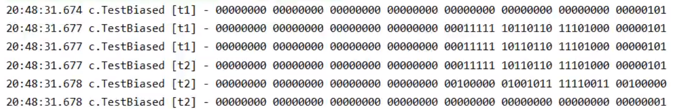
撤销对象偏向状态 - 调用 wait/notify
wait/notify只有重量级锁才有，将偏向锁/轻量级锁，升级为重量级锁，解锁后为正常Normal态
1
2
3
4
5
6
7
8//synchronized前 偏向锁
[t1] - 00000000 00000000 00000000 00000000 00000000 00000000 00000000 00000101
//synchronized中 线程ID+偏向锁
[t1] - 00000000 00000000 00000000 00000000 00011111 10110011 11111000 00000101
//t1 进入wati状态
[t2] - notify
//synchronized中 010 重量级锁
[t1] - 00000000 00000000 00000000 00000000 00011100 11010100 00001101 11001010
批量重偏向
如果对象虽然被多个线程访问，但没有竞争，这时偏向了线程 T1 的对象仍有机会重新偏向 T2，重偏向会重置对象 的 Thread ID
当撤销偏向锁阈值超过 20 次后，jvm 会这样觉得，我是不是偏向错了呢，于是会在给这些对象加锁时重新偏向至加锁线程，不再撤销
1
2
3
4
5
6
7
8
9
10
11
12
13
14
15
16
17
18
19
20
21
22
23
24
25
26
27
28
29
30
31
32
33
34
35Vector<Dog> list = new Vector<>();
Thread t1 = new Thread(() -> {
for (int i = 0; i < 30; i++) {
Dog d = new Dog(); list.add(d); // 30个锁对象进行测试
synchronized (d) {
// 所有状态都是 t1线程ID + 偏向锁101
log.debug(i + ClassLayout.parseInstance(d).toPrintableSimple(true));
}
}
synchronized (list) {
list.notify();
}
}, "t1");
t1.start();
Thread t2 = new Thread(() ->{
synchronized (list) {
list.wait();// try 块略
}
log.debug("===============> ");
for (int i = 0; i < 30; i++) {
Dog d = list.get(i);
/*线程t1 线程t1 ID + 偏向锁101*/
log.debug(i + ClassLayout.parseInstance(d).toPrintableSimple(true));
synchronized (d) {
// 前19个 【t2线程要使用锁对象】偏向锁升级成轻量级锁 62位轻量级锁锁记录的地址指针+轻量级锁00
// 第20个开始 【t2线程要使用锁对象 咋老是t2 不升级了 统统一次偏向t2吧】线程t2 ID + 偏向锁101
log.debug(i + ClassLayout.parseInstance(d).toPrintableSimple(true));
}
//前19个： 【解锁后】00...00+01 偏向状态被撤销
//第20个开始 线程t2 ID + 偏向锁101
log.debug(i + ClassLayout.parseInstance(d).toPrintableSimple(true));
}
}, "t2");
t2.start();
批量撤销
- 当撤销偏向锁阈值超过 40 次后，jvm 会这样觉得，自己确实偏向错了，根本就不该偏向。于是整个类的所有对象都会变为不可偏向的，这个类新建的对象也是不可偏向的
1
2
3
4
5
6
7
8
9
10
11
12
13
14
15
16
17
18
19
20
21
22
23
24
25
26
27
28
29
30
31
32
33
34
35
36
37
38
39
40
41static Thread t1,t2,t3;
private static void test4() throws InterruptedException {
Vector<Dog> list = new Vector<>();
int loopNumber = 39;
t1 = new Thread(() -> {
for (int i = 0; i < loopNumber; i++) {
Dog d = new Dog();
list.add(d);
synchronized (d) {
// 添加偏向锁 所有状态都是 t1线程ID + 偏向锁101
}
}
LockSupport.unpark(t2);
}, "t1");
t1.start();
t2 = new Thread(() -> {
LockSupport.park();
for (int i = 0; i < loopNumber; i++) {
Dog d = list.get(i);
/*线程t1 线程t1 ID + 偏向锁101*/
synchronized (d) {
// 0-18个升级为轻量级锁 19-38批量重偏向
}
//前19个： 【解锁后】00...00+01 偏向状态被撤销【+20个】
//第20个开始 线程t2 ID + 偏向锁101
}
LockSupport.unpark(t3); }, "t2");
t2.start();
t3 = new Thread(() -> {
LockSupport.park();
for (int i = 0; i < loopNumber; i++) {
Dog d = list.get(i);
synchronized (d) {
// 0-18个【加】轻量级锁 19-38【升级】为轻量级锁 解锁后撤销偏向锁为Normal【+19个】
}
}
}, "t3");
t3.start();
t3.join();
log.debug(ClassLayout.parseInstance(new Dog()).toPrintableSimple(true));// 生成对象对Normal状态
}
其他优化
1.减少上锁时间
- 同步代码块中尽量短
2.减少锁的粒度
- 将一个锁拆分为多个锁提高并发度，例如:
- ConcurrentHashMap
- LongAdder分为base和cells两部分。没有并发争用的时候或者是cells 数组正在初始化的时候，会使用
CAS来累加值到base,有并发争用，会初始化cells数组，数组有多少个cell,就允许有多少线程并行修改,最后将数组中每个cell累加，再加上base就是最终的值 - LinkedBlockingQueue 入队和出队使用不同的锁，相对于LinkedBlockingArray只有一 个锁效率要高
3.锁粗化
多次循环进入同步块不如同步块内多次循环
另外JVM可能会做如下优化，把多次append的加锁操作粗化为一次(因为都是对同一个对象加锁，没必要
重入多次)1
new StringBuffer().append("a").append("b").append("c");
4.锁消除
- JIT即时编译器会对Java字节码进行进一步优化 分析局部变量不会逃离此方法 对象不会共享 即不需要加锁
1 | public class MyBenchmark { |
5.读写分离
CopyOnWriteArrayList
ConyOnWriteSet
6 wait/notify原理
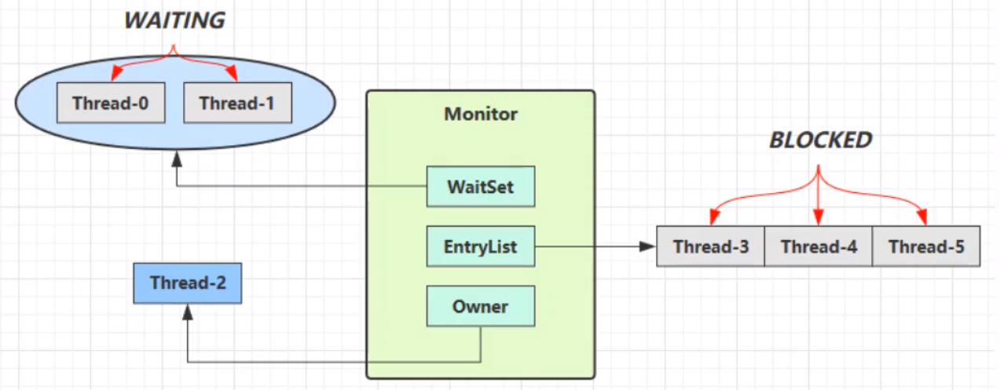
Owner线程发现条件不满足，调用wait方法，即可进入WaitSet变为WAITING状态- BLOCKED 和 WAITING 的线程都处于阻塞状态，不占用 CPU 时间片
- BLOCKED 线程会在 Owner 线程释放锁时唤醒
- WAITING 线程会在 Owner 线程调用 notify 或 notifyAll 时唤醒，但唤醒后并不意味者立刻获得锁，仍需进入 EntryList 重新竞争
6.1常用方法
均是Object类的方法，都只能在同步方法或者同步代码块中使用，否则抛出异常【synchronized关键字捆绑使用】
1
2// 方法会释放对象的锁，进入 WaitSet 等待区，从而让其他线程就机会获取对象的锁。无限制等待，直到 notify 为止
wait()1
2// 有时限的等待, 到 n 毫秒后结束等待，或是被 notify
wait(long timeout)1
2//唤醒一个处于等待状态的线程
notify()1
2// 唤醒同一个对象上所有调用wait()方法的线程，优先级搞得优先调度
notifyAll()
sleep(long n) 和 wait(long n) 的区别
sleep是Thread静态方法，而wait是Object的成员方法sleep不需要强制和synchronized配合使用，但wait需要和synchronized一起用sleep在睡眠的同时，不会释放对象锁的，但wait在等待的时候会释放对象锁- 它们运行状态状态
TIMED_WAITING
1 | //建议使用final 不然synchronized可能引用的不同对象 |
6.2基本语法
1 | synchronized(lock) |
6.3同步模式之保护性暂停模式
即 Guarded Suspension，线程间消息传递
有一个结果需要从一个线程传递到另一个线程，让他们关联同一个 GuardedObject
如果有结果不断从一个线程到另一个线程那么可以使用消息队列（见生产者/消费者）
JDK 中，join 的实现、Future 的实现，采用的就是此模式
因为要等待另一方的结果，因此归类到同步模式
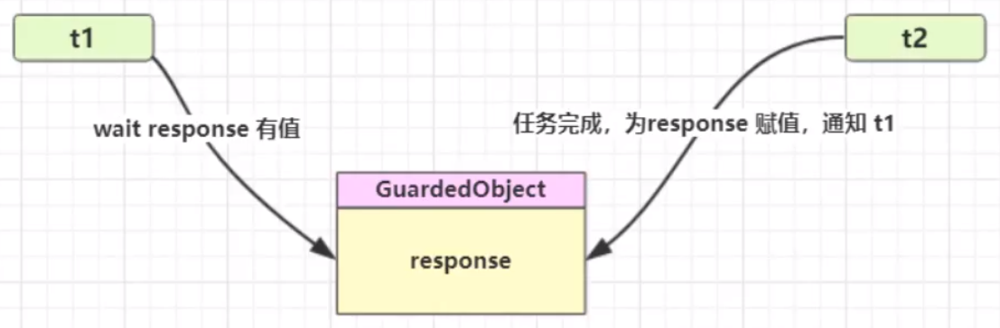
1
2
3
4
5
6
7
8
9
10
11
12
13
14
15
16
17
18
19
20
21
22
23
24
25
26
27
28
29
30
31
32
33
34
35
36
37
38
39
40
41
42
43
44
45
46
47
48
49
50
51
52
534j(topic = "MultiThread")
public abstract class MultiThread {
public static void main(String[] args) {
GuardObject guardObject = new GuardObject();
//一个线程传入 一个线程获取
new Thread(()->{
log.debug("下载超大文档");
Sleeper.sleep(1);
Object bigFile = new Object();
log.debug("线程传递文档");
guardObject.complete(bigFile);
},"t1").start();
new Thread(()->{
log.debug("等待超大文档");
Object result = guardObject.getResponse();
log.debug("线程接受文档");
System.out.println(result);
},"t2").start();
}
}
class GuardObject{
private Object response;
public Object getResponse() {
synchronized (this)
{
while(response == null)
{
try {
this.wait();
} catch (InterruptedException e) {
e.printStackTrace();
}
}
return response;
}
}
public void complete(Object response) {
synchronized (this)
{
this.response = response;
this.notifyAll();
}
}
}
//17:37:23.565 [t1] MultiThread - 下载超大文档
//17:37:23.565 [t2] MultiThread - 等待超大文档
//17:37:24.571 [t1] MultiThread - 线程传递文档
//17:37:24.571 [t2] MultiThread - 线程接受文档增加超时停止功能
1
2
3
4
5
6
7
8
9
10
11
12
13
14
15
16
17
18
19
20
21
22
23
24
25
26
27
28
29
30
31
32
33
34
35
36
37
38
39
40
41
42
43
44
45
46
47
48
49
50
51
52
53
54
55
564j(topic = "MultiThread")
public class MultiThread {
public static void main(String[] args) {
GuardObject guardObject = new GuardObject();
// 结果使用线程
new Thread(()->
{
log.debug("t1 start");
//线程间消息传递:取出******
Object response = guardObject.getResponse(1000);
log.debug("t1 get response");
},"t1").start();
new Thread(()->{
// 模拟下载
log.debug("t2 start download");
Sleeper.sleep(3);
//线程间消息传递:传入******
guardObject.complete(new Object("我是下载内容"));
log.debug("t2 finish download");
//优点 此时可以干其他事情 join方法不行
},"t2").start();
}
}
class GuardObject{
private Object response;
public Object getResponse(long timeout) {
synchronized(this)
{
long begin = System.currentTimeMillis();
long passTime = 0; ***
while (response == null) {
long waitTime = timeout - passTime; //***避免虚假唤醒情况 莫名的被唤醒了
if(waitTime <= 0)
break;
try {
this.wait(waitTime);
} catch (InterruptedException e) {
e.printStackTrace();
}
passTime = System.currentTimeMillis() - begin;
}
return response;
}
}
public void complete(Object response) {
synchronized (this)
{
this.response = response;
this.notify();
}
}
}- 之前使用
join交互线程间的结果，具有一定缺点- join方法必须等待线程完成，再通知另一个线程。保护性暂停模式可以在下载线程中完成后立即通知另一个线程
- 等待的结果变量必须是全局的。保护性暂停模式变量都是局部的
- 之前使用
6.4Join方法原理【保护性暂停应用】
- 线程间传递的是：检测线程是否结束的boolean
- join与保护性暂停中的get方法很像，另一个线程没有传递过来对象【线程是否结束信号】就等着
1 | public final void join() throws InterruptedException { |
保护性暂停模式-邮递员传递信息给居民【类RPC框架】
图中 Futures 就好比居民楼一层的信箱（每个信箱有房间编号），左侧的 t0，t2，t4 就好比等待邮件的居民，右侧的t1 t3 t5就好比邮递员
如果需要在多个类之间使用
GuardedObject对象，作为参数传递不是很方便，因此设计一个用来解耦的中间类， 这样不仅能够解耦【结果等待者】和【结果生产者】，还能够同时支持多个任务的管理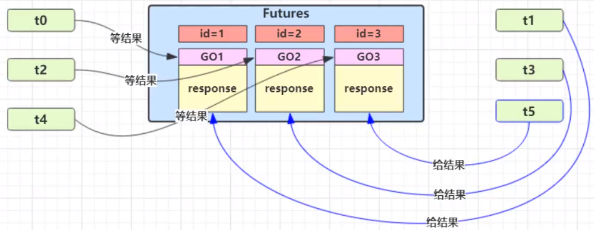
1 | 4j(topic = "MultiThread") |
6.5异步模式之消费者生产者模式
线程间消息传递，与前面的保护性暂停中的 GuardObject 不同，不需要产生结果和消费结果的线程一一对应
消费队列可以用来平衡生产和消费的线程资源
生产者仅负责产生结果数据，不关心数据该如何处理，而消费者专心处理结果数据
消息队列是有容量限制的，满时不会再加入数据，空时不会再消耗数据
JDK 中各种阻塞队列，采用的就是这种模式
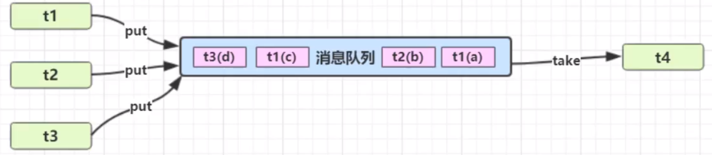
程序: 生产者消费者
- synchronized版本
1 | 4j(topic = "MultiThread") |
原文作者: 掘金木匠
原文链接: http://goldcarpenter.github.io/2019/04/21/多线程_Part4/
版权声明: 转载请注明出处(必须保留作者署名及链接)